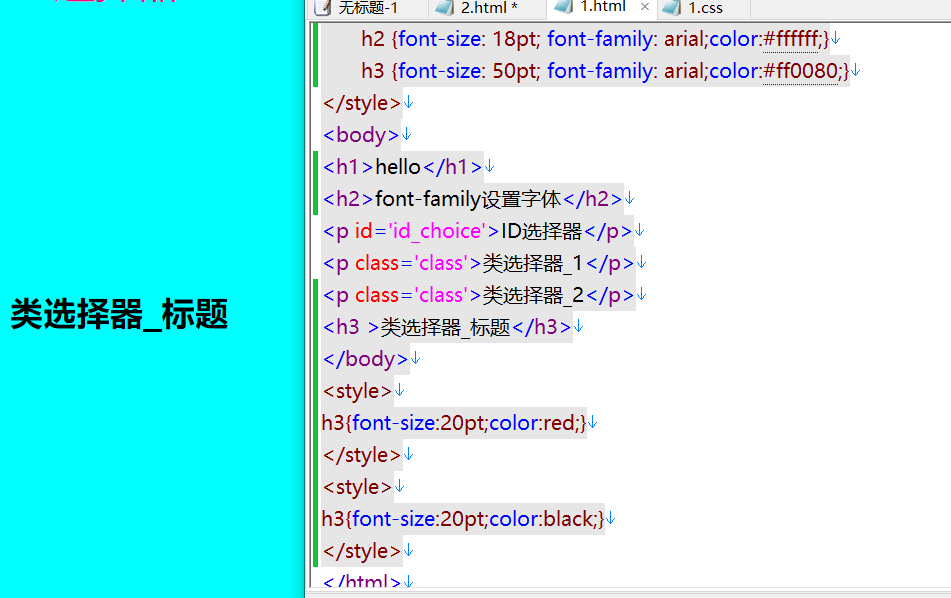
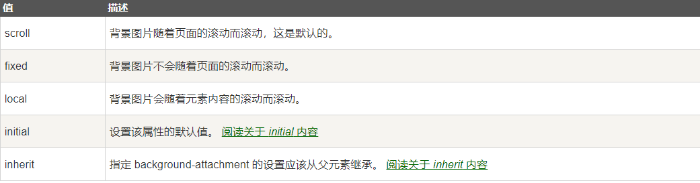
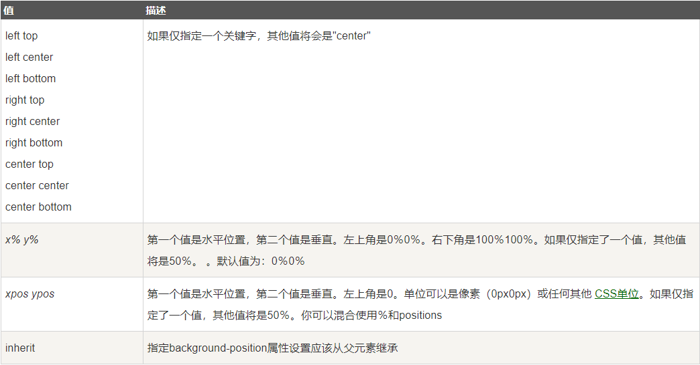

来自之前cnblog的博客
源地址：https://www.cnblogs.com/This-is-Y/p/12048236.html
1.调用
内部样式表：
css可以直接在html代码里面使用</style></style>节点。允许html代码中有两个style节点，但是起作用的是靠后的节点

如图的代码，起作用的是最后一个
<style>
h3{font-size:20pt;color:black;}
</style>
外部样式表：
在<head></head>节点中使用<link rel=’stylesheet’ type=’text/css’ href=’css文件位置’ /> 代码来调用css代码
多重样式表：
· 这个放在后面再说
2.注释
** **html：<!– 注释内容 –> 进行注释。
css：·/* 注释内柔 */ 进行注释。
这里再说一下其他语言的注释方法(参考：https://blog.csdn.net/tim_st/article/details/78185807)
C/C++/C#
行注释：//这里是注释
块注释：/这里是注释/
Java
行注释：//这里是注释
块注释：/这里是注释/
JavaScript
行注释：//这里是注释
块注释：/这里是注释/
XML
块注释：<!–这里是注释–>
Python
行注释：#这里是注释
块注释：’’’这里是注释’’’
PHP
行注释：**// **这里是注释
** *块注释：/ 这里是注释内容 */
SQL Server/Oracle PLSQL
行注释：–这里是注释
块注释：/这里是注释/
MySQL
行注释：–这里是注释
行注释：#这里是注释
块注释：/这里是注释/
VB
行注释：’这里是注释
汇编语言
行注释：;这里是注释
perl
行注释：# 这是一个单行注释
块注释：
=pod
这里是注释
=cut
3.背景
- background-color #颜色
- background-image #图片
- background-repeat #平铺方式
- background-attachment #背景图是否固定
- background-position #位置
background-image:url(图片名)。如background-image:url(‘img.jpg’)（不是位置，图片应放在代码同目录下）
background-repeat：repeat-x(水平平铺)，repeat-y(垂直平铺)，no-repeat(不平铺)
** **background-attachment：

background-position：

然后可以采用简写属性，如body {background:#ffffff url(‘img_tree.png’) no-repeat right top;}
简写属性对应关系为：
- background-color
- background-image
- background-repeat
- background-attachment
- background-position
** 4.选择器**
选择器分为id选择器和class选择器，作用效果相同，可以通过特定的id或class对一组元素进行处理。
id选择器使用#id值{}。如<p id=”part1”>Hello World!</p> id选择器：#part1{ text-align:center; color:red;}
class选择器使用p.class值{}(只有p节点内有class属性的时候，可以写为.class值{})。如<p class=”part2”>Hello World!</p> id选择器：.class2{ text-align:center; color:red;}
值得注意的是：ID属性不要以数字开头，数字开头的ID在 Mozilla/Firefox 浏览器中不起作用。
类名的第一个字符不能使用数字！它无法在 Mozilla 或 Firefox 中起作用。
（火狐事真多 ==）
5.文本属性
color：颜色
text-align：对齐方式
text-decoration：文本修饰(主要用于消除下划线)
text-transform：文本转化(大小写转化或首字母大小写转化)
text-indent：文本缩进
letter-spacing：字符之间的距离
line-height：行与行之间的距离
direction：文本方向(从右到左)
word-spacing：单词之间的距离(前面那个是字符)(中文无效)
white-space:元素环绕
vertical-align：图片对齐方向
text-shadow：添加文本阴影
值得注意的事： 对于W3C标准的CSS：如果你定义了颜色属性，你还必须定义背景色属性。
font ：
font-family：设置字体系列
font-style：设置字体样式
font-size：设置字体大小(为了避免Internet Explorer 中无法调整文本的问题，许多开发者使用 em 单位代替像素。em的尺寸单位由W3C建议。1em和当前字体大小相等。在浏览器中默认的文字大小是16px。因此，1em的默认大小是16px。可以通过下面这个公式将像素转换为em：px/16=em**)**
font-weight：设置字体粗细
font-variant：设置小型大写字体
6.链接
- a:link - 正常，未访问过的链接
- a:visited - 用户已访问过的链接
- a:hover - 当用户鼠标放在链接上时
- a:active - 链接被点击的那一刻
如 a:link {color:#000000;}
a:visited {color:#00FF00;}
a:hover {color:#FF00FF;}
a:active {color:#0000FF;}
css内容还有很多，这里先写一部分